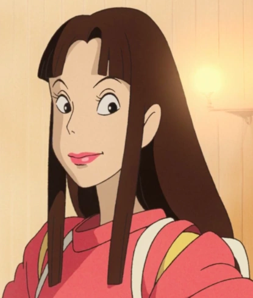

Spirited Away tells the story of Chihiro "Sen" Ogino, a ten-year-old girl who, while moving to a new neighborhood, inadvertently enters the world of kami (spirits of Japanese Shinto folklore). After her parents are turned into pigs by the witch Yubaba, Chihiro takes a job working in Yubaba's bathhouse to find a way to free herself and her parents and return to the human world.

Chihiro Ogino

Haku/Nigihayami Kohaku Nushi
Kaonashi/No Face
Lin
Submitted by Baring Jaiyanah | 9-Ruby